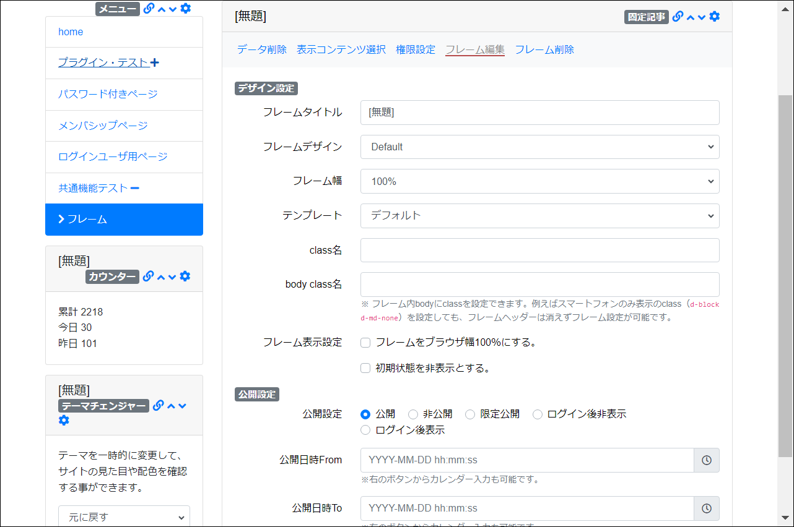

フレーム - フレーム編集
フレームに関する設定を変更できます。
下に各項目の説明を記載します。
画面
【フレーム編集】

- 各項目の説明は以下を参照してください。
| 項目 | 説明 |
|---|---|
| フレームタイトル | フレームのヘッダー内に表示されるフレームのタイトルです。 |
| フレームデザイン | 複数のフレームデザインを選択できます。 詳しくは「フレームデザイン」のマニュアルページを参照してください。 |
| フレーム幅 | フレームの幅を指定できます。この機能を使ってフレームを横並びにすることもできます。 詳しくは「フレーム幅」のマニュアルページを参照してください。 |
| テンプレート | プラグインによっては、複数のテンプレートを選択できます。 データのレイアウトを定義したものがテンプレートです。 |
| フレーム表示設定 | |
| フレームをブラウザ幅100％にする。 | ヘッダーやフッターをブラウザ幅いっぱいまで広げたい場合に使用します。 詳しくは「ブラウザ幅100％にする」のマニュアルページを参照してください。 |
| 初期状態を非表示とする。 | タブプラグインと組み合わせて使用します。 |
| 公開設定 | フレームの公開設定を「公開」「非公開」「限定公開」から選べます。限定公開の場合は、「公開日時From」と「公開日時To」を指定することができます。 |
| 対象ページ | メインエリア以外のヘッダー、フッター、左、右の共通エリアに配置した場合にのみ使用できます。 |